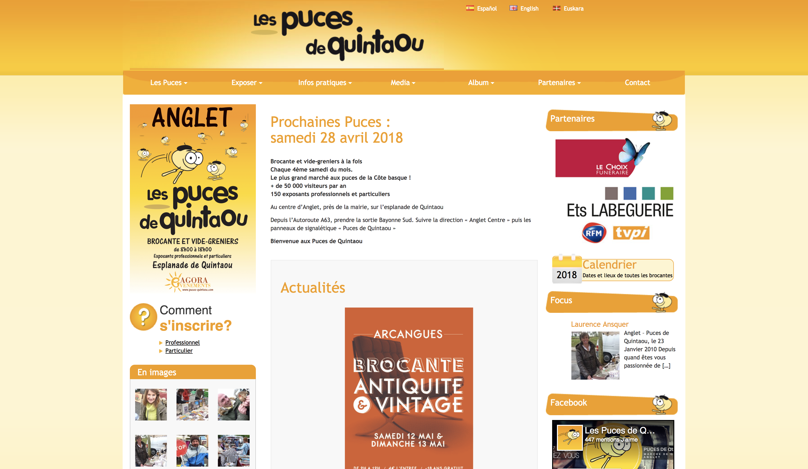
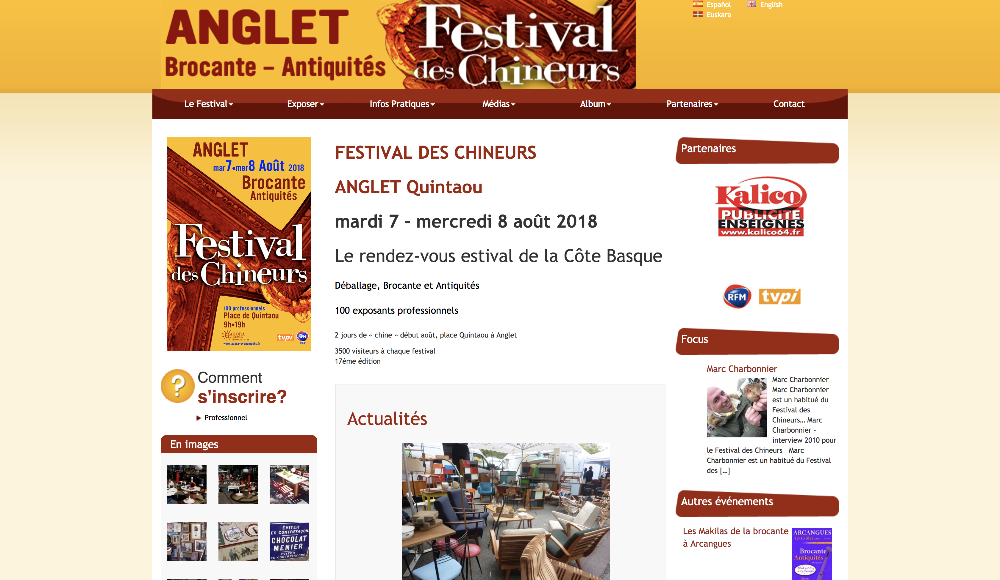
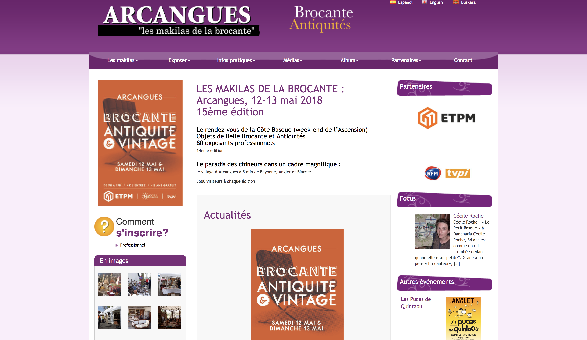
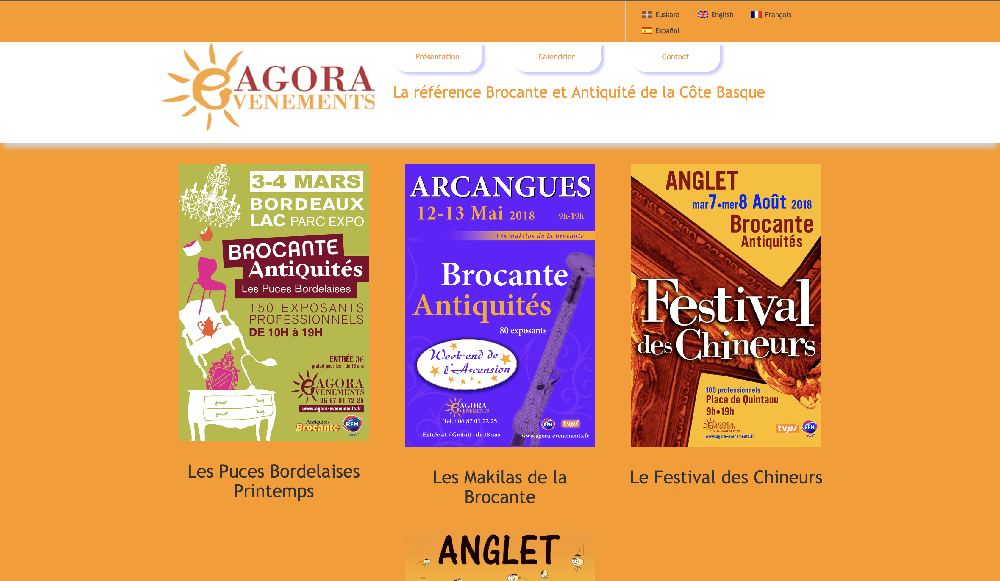

Oral
Professionnel
Matthieu Brillaxis - Développeur web
ECV Digital - 27 avril 2018
Présentation
Matthieu Brillaxis
23 ans
Bordeaux - Bayonne
Mes passions & loisirs
- Le foot
- Les jeux vidéos
- Les séries
Mes formations
BTS SIO
EPSI Bordeaux
2013 - 2015
Bachelor chef de projet digital
et
Responsable de communication
WIS Bordeaux
2015 - 2016
Mastere Développement Web
ECV Digital Bordeaux
2016 - 2018
Mon BTS SIO
Pourquoi cette formation ?
- Hésitation entres différentes formations
- Intéret pour l'informatique et les nouvelles technologie
- Envie de découvrir Bordeaux
Mes stages
- Lafon Technologies - 2 mois
- OhMyWeb! - 2 mois
Lafon Technologies
- Récolte de donnée
- Mise à jour site web intranet
- Base de donnée & Requete SQL
Ce que j'en retiens :
- Motivation pour continuer les études
- Intéret pour le web
- Découverte du monde de l'entreprise
- Découverte d'une grosse entreprise
OhMyWeb!
- 4 sites web wordpress pour l'agence




Ce que j'en retiens :
- Confirmation de mon intéret pour le web
- Envie de me spécialisé dans le web
- Découverte d'une petite entreprise
Mon Bachelor chef de projet digital
Pourquoi cette formation ?
- Souhait d'avoir des bases dans divers domaines
- Souhait de m'orienter vers le web
- Continuer mes études en alternance
Mon alternance chez skill4web
- Petite agence web Bordelaise
- Développeur web
- Drupal
- Wordpress
- Site fait main
Mon rôle
- Développer des sites web
- Travailler en collaboration
- Respecter les cahiers des charges
- Apprendre tout en étant productif
Les difficultés
- Assimiler les méthodes de travail
- Drupal
- Apprendre à mener un projet seul
- Rigueur
Les compétences
- Drupal
- JS
- PHP
- CSS / Responsive design
Quelques-unes de mes créations


Ce que je retiens :
- La rigueur
- Ne pas avoir peur d'apprendre
- Se débrouiller
- Première expérience professionnel sur le long therme
- Réel engouement pour le web
Mon futur ?
- Hésitation entre continuer les études et le monde du travail
- Envie de travailler
- Envie de progresser
- Me spécialisé dans le développement web
- Et le mobil ?